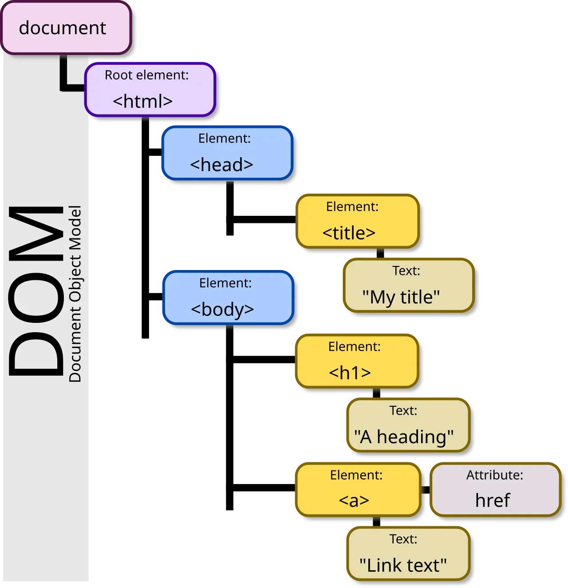
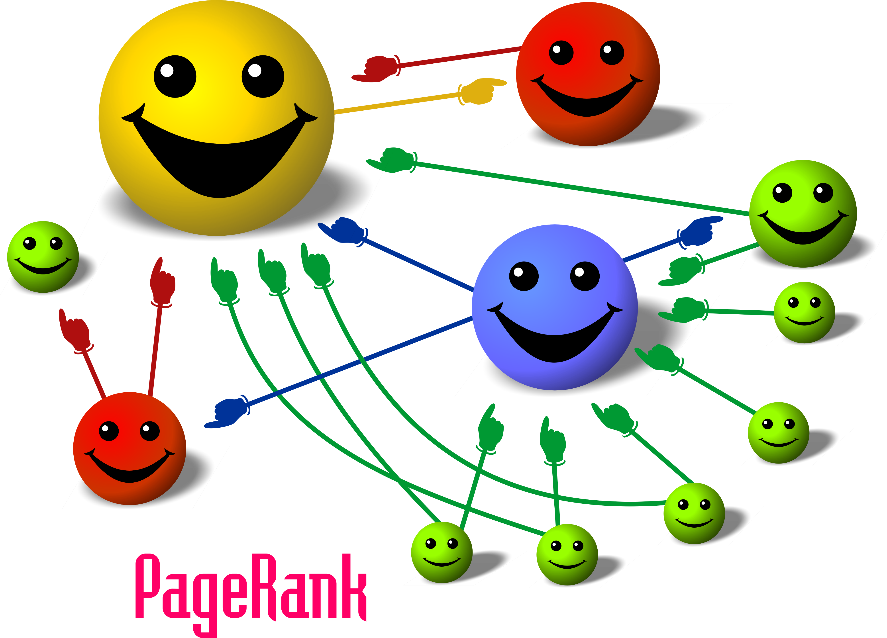
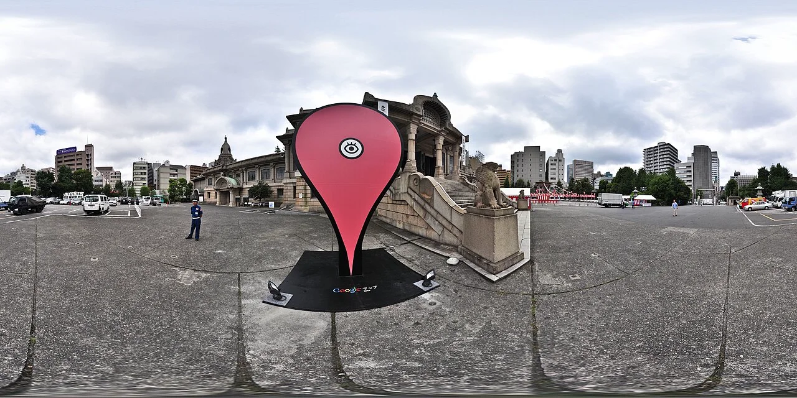

01

On-Page SEO
Improving page structure, content, headings, and internal signals for better search understanding.
Abhiram A. — Personal workspace in Trivandrum, Kerala
SEO Specialist specializing in On-Page SEO, Off-Page SEO, Keyword Research, SEO Audits, Content Optimization and Link Building.
Contact MeI’m Abhiram A., an SEO Specialist based in Trivandrum, Kerala, focused on On-Page SEO, Technical SEO, Keyword Research, Off-Page SEO, and content optimization. My Data Science, Python, and Generative AI background adds a technical and analytical approach to SEO while keeping search visibility and website quality at the center of my work.
Focused organic search optimization services structured around technical crawlability, content relevance, and ethical domain authority.

Improving page structure, content, headings, and internal signals for better search understanding.
Building relevant authority through ethical outreach, quality links, and trusted external signals.

Improving crawlability, indexation, site structure, and technical search performance.

Improving local search visibility through location-focused content and consistent business signals.
A disciplined, step-by-step framework designed to evaluate search intent, resolve technical friction, and build enduring organic performance.
Analyzing real user query patterns, search intent variations, and competitor visibility to identify foundational organic opportunities.
Running technical crawl diagnostics to identify indexing obstacles, broken links, metadata deficiencies, and structural gaps.
Implementing on-page heading hierarchies, content adjustments, internal link pathways, and schema markup according to search guidelines.
Strengthening domain credibility through relevant industry citations, ethical outreach planning, and helpful editorial asset creation.
Monitoring organic search impressions, crawl statistics, indexation trends, and technical health inside Google Search Console.
Reviewing performance observations systematically to refine on-page factors, update aging content, and reinforce emerging topic clusters.
Supporting industry background showcasing technical work, data processing, and analytical workflow development.
Gained practical technical experience with AI workflows, computational prompt design, and automated data processing pipelines. This background reinforces an analytical, programmatic approach to modern technical SEO and search engine data parsing.
University Institute of Technology (UIT), University of Kerala, Thiruvananthapuram, Kerala
Edure Learning, Thiruvananthapuram
Industrial Training Institute (ITI), Chackai, Thiruvananthapuram
SMV Government Model Higher Secondary School, Thiruvananthapuram, Kerala
St. Mary's Higher Secondary School, Pattom, Thiruvananthapuram, Kerala
A practical SEO approach built around clear analysis, technical awareness, ethical practices, and continuous improvement.
I follow a clear process from search intent and keyword research to optimization and review.
My technical background helps me understand website structure, code, and SEO-related implementation.
I use data and analytical thinking to evaluate keywords, content, and search performance.
I explain SEO findings in simple language and focus on practical, prioritized actions.
I follow sustainable SEO methods that prioritize relevance, quality, and long-term website health.
I keep developing my SEO knowledge as search systems, websites, and best practices evolve.
Connect with me directly for on-page audits, technical SEO, keyword targeting, or high-intent search strategy. I'm available for consultations and collaborative projects.
Real-time verification of heading discipline, metadata standards, structured data, and crawler directives.
<h1>Best SEO Specialist in Trivandrum</h1>H1: Best SEO Specialist in Trivandrum
├── H2: About Me
├── H2: SEO Services
├── H3: Keyword Research, On-Page SEO, Off-Page SEO, ...
├── H2: My SEO Process
├── H2: Professional Experience
├── H2: Why Work With Me
└── H2: Direct WhatsApp EnquiryBest SEO Specialist in TrivandrumBest SEO Specialist in Trivandrum specializing in on-page SEO, off-page SEO, keyword research, SEO audits, content optimization and link building.JSON-LD embedded in <head> representing Google-supported schemas:
{
"@context": "https://schema.org",
"@graph": [
{ "@type": "Person", "name": "Abhiram A.", "jobTitle": "SEO Specialist" },
{ "@type": "WebSite", "name": "Abhiram A. - SEO Specialist in Trivandrum" }
]
}